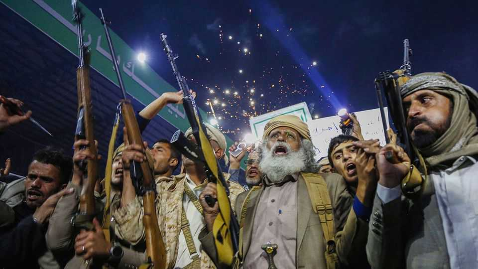
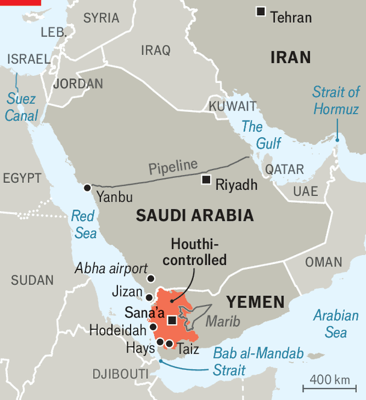

Saudi Arabia is locked in a dangerous stand-off with the Houthis
By threatening shipping, the Yemeni rebels hope to wring concessions from the kingdom

Jul 30th 2026
ABDUL-MALIK AL-HOUTHI does not mince his words. On July 16th the leader of the Houthis, a Shia militia that controls most of north-west Yemen, vowed a ruthless campaign against Saudi Arabia, his long-time foe. “The equation will be airports for airports, ports for ports, a blockade for a blockade,” he said in a broadcast. The Houthis quickly made good on the threat. Over the past couple of weeks the group has hit Saudi-linked tankers in the Red Sea and oil facilities in Jizan and Yanbu on the kingdom’s west coast. Shipping through the Bab al-Mandab strait, at the mouth of the sea, has fallen to its lowest level in months.
When the Houthis targeted ships during Israel’s war in Gaza between 2023 and 2025, traffic through Bab al-Mandab roughly halved. Now the strategy will be more potent. Since war in Iran closed the Strait of Hormuz, the Red Sea has become a lifeline for Saudi oil exports: the kingdom has been shipping 3.5m barrels a day (b/d) from ports on its west coast, up from 120,000 b/d before the war. Getting those volumes out through the Suez Canal will be difficult and possibly unsafe. On July 29th a drone hit a gas storage tanker near the northern end of the canal (see map).
The rebels are keen to exploit Saudi Arabia’s vulnerability. Their campaign is “two-in-one”, says Farea al-Muslimi of Chatham House, a think-tank in London. Choking Saudi oil exports (and adding pressure to global markets) boosts Iran, the Houthis’ closest ally, in its war with America. But the Houthis are also frustrated with the truce they struck with Yemen’s internationally recognised government and its Saudi backers in 2022. They hope to extract concessions from Saudi Arabia and expand their power in Yemen.
Their main demand is an end to Saudi-imposed restrictions on shipping and flights in Yemen, especially a ban on Iranian flights. On July 13th they invited a plane from Tehran to land in Sana’a, the Houthi-controlled capital. The flight was a provocation to the Saudis and their allies in Yemen, who bombed the runway before it could touch down. The Houthis retaliated by striking Abha airport in Saudi Arabia (see map).

The rebels also want money. Some 60% of Yemenis in Houthi-controlled areas are not getting enough food. The group has started fining the poor for begging. The rebels want Saudi Arabia to fund civil servants’ salaries, which have not been paid in full since 2018. The two sides came close to agreeing on this in 2023, but the Houthis’ campaign in the Red Sea that year scuppered it. Now they think they can get the cash through blackmail.
By playing tough, the Houthis are following Iran’s example. Having seen it win big concessions in its deal with America in mid-June, they hope they can do the same with Saudi Arabia. But the Saudis and their Yemeni allies have good reasons to hold firm. Saudi officials say the flight to Sana’a was carrying weapons and military advisers from Iran. Allowing the Houthis an air bridge to Tehran would strengthen one of Iran’s fiercest and best-equipped allies. The kingdom is reportedly trying to rally allies to escort ships.
Some reckon the Houthis are preparing to go further. “A return to large-scale conflict is inevitable,” says Nadwa al-Dawsari of the Centre on Armed Groups, a think-tank in Geneva. The rebels are probing several fronts. In early July they attacked government positions in Hays, south of the Houthi-held port of Hodeidah. They have mobilised troops in Marib, an oil-rich region east of Sana’a, and around Taiz, a city in the south. The government is readying its forces, too. “We are prepared for any escalations,” said Afrah al-Zouba, Yemen’s foreign minister, on July 27th.
Yemen’s anti-Houthi forces are more united than at the start of the year, when they were split into rival factions backed by Saudi Arabia and the United Arab Emirates (UAE). Yet it is not clear they can put up a serious fight. So far Saudi Arabia has bombed several Houthi positions, including Hodeidah on July 24th. But the kingdom may be reluctant to reprise the massive air raids that it led during the 2010s—not least because the Houthis’ drones and missiles give them new ways to retaliate. And any campaign would have to be done without the UAE, whose forces left Yemen in January at the Saudis’ behest.
Whether air strikes would be effective is another question. The lesson of the Saudi raids of the 2010s and America’s campaign last year is that the mountainous highlands controlled by the Houthis make it hard to destroy enough of their weapons to make a difference. “You can’t reduce their anti-shipping capability so much that they’re unable to hit and possibly sink one or two ships a month,” says Michael Knights of Horizon Engage, a consultancy. “That’s enough of a deterrent for shippers to just stop going.” The Houthis know that full well. ■